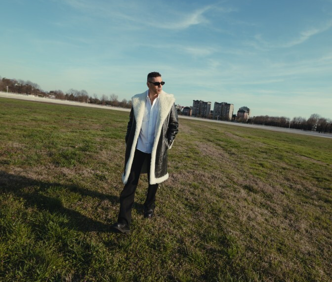
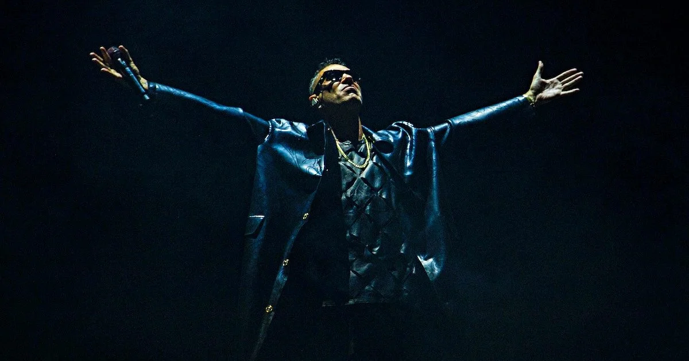

primo festival rap in Italia
unico evento live del King del Rap nel 2023
“Un viaggio musicale, una grande festa capace di unire due capitali del rap nazionale, da nord a sud, da Milano a Napoli”
Due città protagoniste della scena hip hop italiana, che in questi ultimi anni hanno sfornato alcuni dei fenomeni più celebri del mondo del rap, e simbolo per eccellenza di Nord e Sud.
84mila biglietti venduti a Milano e oltre 55mila a Napoli.
Sono state registrate per creare un docu-video di uno degli show italiani più attesi e innovativi degli ultimi tempi.
Marra è il padrone di casa, il direttore artistico e musicale.
Ogni artista ha portato un'esibizione studiata ad hoc per l'occasione, un vero e proprio insieme di showcase personalizzati e curati al dettaglio per regalare agli spettatori qualcosa di unico e irripetibile.
"Sono contento dei miei compagni di viaggio, e non voglio che sia un festival dove gli artisti salgono uno dopo l'altro.
Ho chiesto a tutti di ideare un set corposo e personalizzato, una vera e propria performance.”
“Marra, negli anni, ha citato e si è fatto portavoce di alcune questioni che nel rap vengono veicolate in maniera molto utile e diretta, come ad esempio il tema della salute mentale. Vogliamo fare una cosa sentita, non una cosa di moda: stiamo lavorando per riuscire ad agganciare un’esperienza per chi verrà al festival anche su dei temi che saranno sganciati dal palco, ma che vorremmo ben agganciare al festival.” - intervista di Paola Zukar, manager di Marracash.
Il rapper ha quindi trovato una collocazione a temi come la salute mentale e il disagio giovanile, ad esempio dedicando un pensiero al rapper Baby Gang, non presente a causa dei suoi problemi giudiziari. Marra augura all'amico di riuscire a risolvere tutto nel migliore dei modi e invita il pubblico a non giudicare la vita degli altri "perché nella vita mai niente è sempre bianco o nero."
Il primo San Siro di Salmo, Lazza a Sanremo, la targa Tenco vinta da Marra con l'ultimo album “Noi, loro, gli altri” e tutti i vari risultati ottenuti dall'hip hop negli ultimi anni, hanno spinto l'artista a creare un festival rap al 100% per celebrare il percorso che questo genere ha fatto in Italia.
“Si è aperta una nuova stagione live per i rapper italiani. Ci piacerebbe che Marrageddon potesse diventare un format annuale, ma è presto per parlarne. Il mio obiettivo è uno solo: far divertire chi ci sarà.”